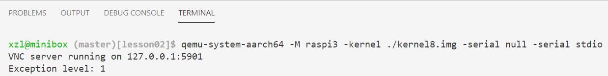
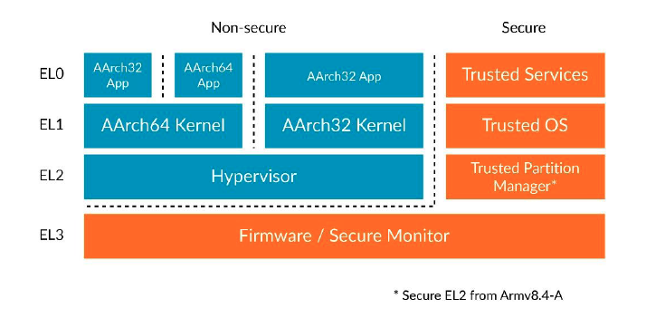

2: Processor initialization

Objectives
Source code location: p1-kernel/src/exp2
We are going to build:
A baremetal program that can switch among CPU exception levels and print out the current level.
Students will:
- Experiment with exception levels (ELs)
- Observe switches among ELs -- crucial for subsequent experiments!
- Tinker with the kernel, e.g. debugging
Background: Exception levels (EL)
ARMv8 defines 4 exception levels. An exception level is a processor execution mode in which only a subset of all operations and registers is available.
The least privileged exception level, i.e. lowest level, is level 0. When processor operates at this level, it mostly uses only general purpose registers (X0 - X30) and stack pointer register (SP). EL0 also allows using STR and LDR instructions to load and store data to and from memory, among other instructions commonly used by a user program.

Why exception levels? Because an OS needs to implement isolation. A user process should not be able to access other process's data. To achieve such behavior, a kernel always runs each user process at EL0. Operating at this exception level a process can only use it's own virtual memory and can't access any instructions that change ELs, MMUs, etc.
The kernel itself usually works at EL1. While running at this exception level CPU gets access to the registers that allows configuring MMU as well as some system registers.
About EL2/3: we will not deal with EL 2 or EL 3 until project 3 (secure hardware enclaves). Let's briefly describe them.
EL2 is for virtual machines. In this case the virtual machine hypervisor runs at EL2 and guest OSes run at EL1. This allows the hypervisor to isolate guest OSes in a similar way how OS isolates user processes.
EL3 is for Arm TrustZone. It is used for transitions from ARM "Secure World" to "Insecure world". This abstraction exist to provide full hardware isolation between the software running in two different "worlds". Application from an "Insecure world" can in no way access or modify information (both instruction and data) that belongs to "secure world", and this restriction is enforced at the hardware level.
Switching ELs
In Arm architecture, there is no way a program can raise its own exception level without invoking code that is allowed to run on a higher level. This makes a perfect sense: otherwise, any program would be able to escape its assigned EL and makes unauthorized access to memory or registers.
Current EL can be changed only if an exception is generated. Common causes of exceptions include:
- software executes some illegal instruction (for example, tries to access memory location at a nonexisting address;
- software tries to divide an integer by 0;
- software executes special instructions (e.g.
svc) to request exceptions.
How about interrupts generated by IO? In Arm's lingo, interrupts are also handled as a special type of exceptions.
Whenever an exception is generated the following sequence of steps takes place (In the description, the exception is handled at EL n, were n could be 1, 2 or 3).
- Address of the current instruction is saved in
ELR_ELn(exception link register) - Current processor state is stored in
SPSR_ELn(Saved Program Status Register) - NB: As some of you may know, other CPU hardware may automatically push registers on stack prior to exception handling. Armv8 does NOT do that.
- The CPU executes an exception handler at ELn.
- The exception handler calls
eretinstruction. This instruction restores processor state fromSPSR_ELnand resumes execution starting from the address, stored in theELR_ELnregister.
There are more details, e.g. the exception handler software also needs to store the state of all general purpose registers and restore it back afterwards, as we will discuss this process in details in the upcoming experiment. For now, we need just to understand the process in general and remember the meaning of the ELR_ELm and SPSR_ELn registers.
An important thing to know is that exception handler is not obliged to return to the same instruction where the exception originates. Both ELR_ELm and SPSR_ELn are writable and the exception handler can modify them in order to specify the instructions to execute right after the EL switch. We are going to use this technique to our advantage when we try to switch from EL3 to EL1 in our code.
Aside: enhanced debugging
Bring up printf()
Right now, the kernel can only print some constant string on a screen, but what I need is some analog of printf function. With printf I can easily display values of different registers and variables. Such functionality is essential for the kernel development because you don't have any other debugger support and printf becomes the only mean for figuring out what is going on inside Rpi3.
Let's not reinvent the wheel and use one of existing printf implementations This function consists mostly from string manipulations and is not very interesting from a kernel developer point of view. The implementation that I used is very small and don't have external dependencies, that allows it to be easily integrated into the kernel. The only thing that I have to do is to define putc function that can send a single character to the screen. This function is defined here and it just uses already existing uart_send function. Also, we need to initialize the printf library and specify the location of the putc function. This is done in a single line of code.
QEMU + GDB debugging
Reminder: GDB allows you to do single step, etc. It may help understand/debug specific instructions. You can find extensive information online.
Code Walkthrough
Finding out the current EL
As we are equipped with the printf function, we can proceed to figure out at which exception level the kernel is booted. A small function that can answer this question looks like this.
.globl get_el
get_el:
mrs x0, CurrentEL
lsr x0, x0, #2
ret
Here we use mrs instruction to read the value from CurrentEL system register into x0 register. Then we shift this value 2 bits to the right (because the lowest 2 bits in the CurrentEL register are reserved and always have value 0). Finally the register x0 contains an integer number indicating current exception level. Now the only thing that is left is to display this value, like this.
int el = get_el();
printf("Exception level: %d \r\n", el);
Rpi3: If you reproduce this experiment, you should see Exception level: 3 on the screen. This means the CPU executes as the security monitor when it boots up.
QEMU: You will see Exception level: 2 because this is how QEMU emulates the CPU: setting the initial EL as 2. Why?
Switching to EL1
EL1 is intended for OS kernels. Strictly speaking, our kernel is not obliged to switch to EL1 when it boots up, but EL1 is a natural choice for us because this level has just the right set of privileges to implement all common OS tasks. It also will be an interesting exercise to see how switching exceptions levels works in action. Let's take a look at the source code that does this (boot.S).
master:
ldr x0, =SCTLR_VALUE_MMU_DISABLED
msr sctlr_el1, x0
ldr x0, =HCR_VALUE
msr hcr_el2, x0
ldr x0, =SCR_VALUE
msr scr_el3, x0
ldr x0, =SPSR_VALUE
msr spsr_el3, x0
adr x0, el1_entry
msr elr_el3, x0
eret
The code configures a few system registers. Now we are going to examine those registers one by one. The register details are documented in the Armv8 architecture manual which we will refer to as needed.
SCTLR_EL1, System Control Register (EL1)
ldr x0, =SCTLR_VALUE_MMU_DISABLED
msr sctlr_el1, x0
Here we set the value of the sctlr_el1 system register. sctlr_el1 is responsible for configuring different parameters of CPU when CPU operates at EL1. For example, it controls whether the cache is enabled and, what is most important for us, whether the MMU (Memory Management Unit) is turned on. sctlr_el1 is accessible from all exception levels higher or equal than EL1 (you can infer this from _el1 postfix)
SCTLR_VALUE_MMU_DISABLED constant is defined here Individual bits of this value are defined like this:
#define SCTLR_RESERVED (3 << 28) | (3 << 22) | (1 << 20) | (1 << 11)Some bits in the description ofsctlr_el1register are marked asRES1. Those bits are reserved for future usage and should be initialized with1.#define SCTLR_EE_LITTLE_ENDIAN (0 << 25)Exception Endianness. This field controls endianess of explicit data access at EL1. We are going to configure the processor to work only withlittle-endianformat.#define SCTLR_EOE_LITTLE_ENDIAN (0 << 24)Similar to previous field but this one controls endianess of explicit data access at EL0, instead of EL1.#define SCTLR_I_CACHE_DISABLED (0 << 12)Disable instruction cache. We are going to disable all caches for simplicity. You can find more information about data and instruction caches here.#define SCTLR_D_CACHE_DISABLED (0 << 2)Disable data cache.#define SCTLR_MMU_DISABLED (0 << 0)Disable MMU. MMU must be disabled until the lesson 6, where we are going to prepare page tables and start working with virtual memory.
FYI - official doc
HCR_EL2, Hypervisor Configuration (EL2)
ldr x0, =HCR_VALUE
msr hcr_el2, x0
We are NOT going to implement our own hypervisor. Still we need to use this register. Among other settings, bit 31 (RW) controls the execution state at EL1, being AArch64 (1) or AArch32 (0). This register also controls at which EL we will handle IRQ.
In sysregs.h we set HCR_VALUE to be (1<<31).
SCR_EL3, Secure Configuration (EL3)
ldr x0, =SCR_VALUE
msr scr_el3, x0
This register is responsible for configuring security settings. For example, it controls whether all lower levels are executed in "secure" or "nonsecure" world. It also controls execution state at EL2. Here we set that EL2 will execute at AArch64 state, and all lower exception levels will be "non secure".
This register has no counterpart at EL2. Therefore, we don't have to set it on qemu emulation.
SPSR_EL3, Saved Program Status (EL3)
ldr x0, =SPSR_VALUE
msr spsr_el3, x0
spsr_el3 contains CPU state, that will be restored after we execute eret instruction.
What is CPU state? It consists of the following information:
-
Condition Flags Those flags contains information about previously executed executions: whether the result was negative (N flag), zero (A flag), has unsigned overflow (C flag) or has signed overflow (V flag). Values of those flags can be used in conditional branch instructions. For example,
b.eqinstruction will jump to the provided label only if the result of the last comparison operation is equal to 0. The processor checks this by testing whether Z flag is set to 1. -
Interrupt disable bits Those bits allows to enable/disable different types of interrupts.
-
EL & other information, required to fully restore the processor execution state after an exception is handled.
Usually spsr_el3 is saved automatically by CPU hardware, when an exception is taken to EL3. Furthermore, this register is writable by our code, so we take advantage of this fact and manually prepare CPU state. SPSR_VALUE is prepared here and we initialize the following fields:
#define SPSR_MASK_ALL (7 << 6)After we change EL to EL1 all types of interrupts will be masked (or disabled, which is the same).#define SPSR_EL1h (5 << 0)This indicates to which EL theeretinstruction will take the CPU to. It's EL1. About EL1h: At EL1 we can either use our own dedicated stack pointer or use EL0 stack pointer.EL1hmode means that we are using EL1 dedicated stack pointer.
ELR_EL3, Exception Link (EL3)
adr x0, el1_entry
msr elr_el3, x0
eret
elr_el3 holds the address, to which we are going to return after eret instruction will be executed. Here we set this address to the location of el1_entry label.
Conclusion
That is pretty much it: when we enter el1_entry function the execution should be already at EL1 mode.
Qemu.log:
Exception return from AArch64 EL2 to AArch64 EL1 PC 0x80038
The address 0x80038 should point to el1_entry. Check it out using addr2line.
Our subsequent experiments will switch between EL1 (kernel) and EL0 (user) frequently.
Go ahead and try it out!